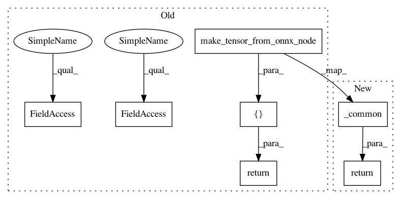

adc869e88b109af683ac94251165f96f7a406bba,onnx_tf/handlers/backend/arg_max.py,ArgMax,version_1,#Any#Any#,17
Before Change
@classmethod
def version_1(cls, node, **kwargs):
axis = node.attrs.get("axis", 0)
keepdims = node.attrs.get("keepdims", 1)
arg_max = cls.make_tensor_from_onnx_node(node, **kwargs)
if keepdims == 1:
return [tf.expand_dims(arg_max, axis=axis)]
return [arg_max]
After Change
@classmethod
def version_1(cls, node, **kwargs):
return cls._common(node, **kwargs)
@classmethod
def version_11(cls, node, **kwargs):
return cls._common(node, **kwargs)
In pattern: SUPERPATTERN
Frequency: 3
Non-data size: 7
Instances
Project Name: onnx/onnx-tensorflow
Commit Name: adc869e88b109af683ac94251165f96f7a406bba
Time: 2019-10-04
Author: wtsang@us.ibm.com
File Name: onnx_tf/handlers/backend/arg_max.py
Class Name: ArgMax
Method Name: version_1
Project Name: onnx/onnx-tensorflow
Commit Name: adc869e88b109af683ac94251165f96f7a406bba
Time: 2019-10-04
Author: wtsang@us.ibm.com
File Name: onnx_tf/handlers/backend/arg_min.py
Class Name: ArgMin
Method Name: version_1
Project Name: onnx/onnx-tensorflow
Commit Name: adc869e88b109af683ac94251165f96f7a406bba
Time: 2019-10-04
Author: wtsang@us.ibm.com
File Name: onnx_tf/handlers/backend/arg_max.py
Class Name: ArgMax
Method Name: version_1
Project Name: onnx/onnx-tensorflow
Commit Name: 6013e3ab81f8419dbe6aeb0bd487ac50004b333a
Time: 2018-10-04
Author: chhuang@us.ibm.com
File Name: onnx_tf/handlers/backend/flatten.py
Class Name: Flatten
Method Name: version_1